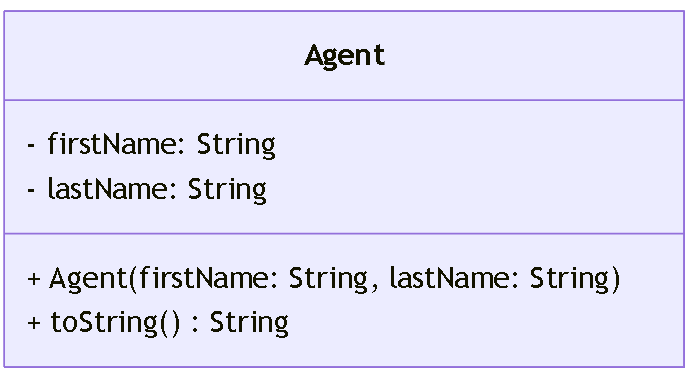

Package main.java.progOO2.p13
package main.java.progOO2.p13
Programming Object Oriented II: Agent
This package introduces the concept of returning values from methods, specifically focusing on
generating a formatted string from an object's internal state.
The Agent class models a secret agent with a first name and a last name, and returns
a self-introduction string in a specific style.
Key learning goals:
- Encapsulation: The fields
firstNameandlastNameare private, ensuring controlled access. - String formatting: The
toString()method combines private fields into a well-defined output format. - Constructor usage: Demonstrates initializing object attributes through parameters.
This exercise reinforces how to use constructors to set state and how to override the toString()
method to produce a meaningful text representation of an object.
